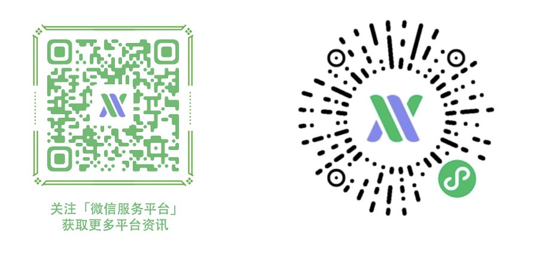

# 概述
微信服务市场，是基于微信开放准则及用户需求，为第三方合作伙伴提供的服务展示平台。平台制定一定的准入门槛及审核标准，并引入优质的开发、运营等服务提供给用户，与第三方合作伙伴一起共建微信服务生态。
服务市场服务商，指为微信小程序提供模版开发服务、定制化开发服务、运营服务、插件及接口能力的第三方合作伙伴，包括但不限于具有第三方平台账号的平台型服务商和定制型服务商。任何有意愿为小程序提供开发、运营等服务的企业开发者都可以申请成为服务市场服务商。服务商入驻后，可在管理控制台上传服务，通过平台审核后，在服务市场上架展示，小程序用户即可在服务市场中浏览服务，获取服务商信息。
服务市场目前包含四个专区，小程序服务 、公众号服务、接口与插件、其它服务。
平台对服务商提交的服务对应的行业、服务质量及解决方案完整性进行审核，经过审核后才可上架展示。
1、 小程序服务：小程序整体解决方案，帮助商家快速创建适用于各行业的优质小程序。目前已开通20个一级行业，121个二级行业，37个功能场景，支持商家分行业，分场景筛选自己所需的服务。
2、 公众号服务：商家可在微信服务市场获取文章美化、图片设计等公众号工具及服务。
3、 接口与插件服务：平台提供包括音乐及视频插件、OCR识别等多项接口能力、多类型资源包，帮助开发者低成本接入，优化小程序性能。
4、 其它服务：平台提供短信、客服工具、广告推广等泛企业经营工具。
# 如何访问服务市场
- PC端：请点击访问https://fuwu.weixin.qq.com
- 移动端：请扫码访问，或者搜索「微信服务平台」小程序、「微信服务平台」公众号 